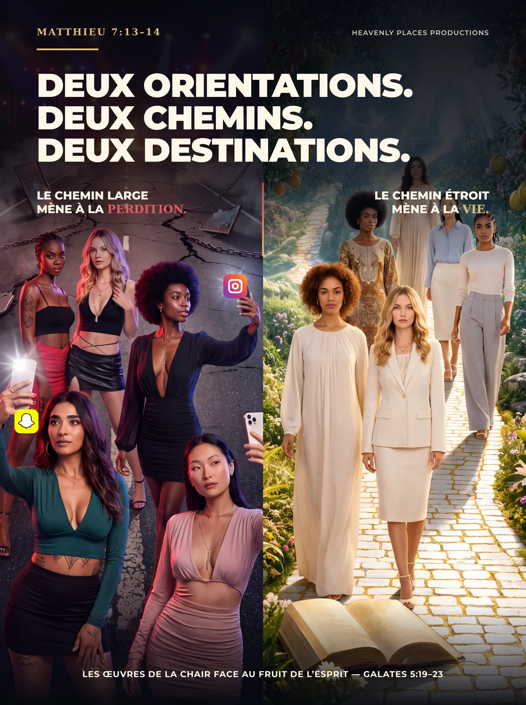

STUDIO CRÉATIF & SOLUTIONS IA · MONTRÉAL
Votre vision.
Une création qui vit.
Images, identités de marque et applications : nous donnons forme à vos idées avec la création et l’intelligence artificielle.
Trouver votre service ↗Faites défiler pour explorer
01 / CE QUE NOUS CRÉONS
De l’idée
au concret.
Un film à imaginer, une marque à incarner, un outil à construire. Choisissez votre point de départ.
02 / CRÉATIONS CHOISIES
Des images.
Une mission.
Des récits qui interpellent.
Une conviction qui traverse chaque création.

À LA UNE / ÉVANGÉLISATION
Deux orientations.
Deux chemins.
Deux destinations.
Une série d’affiches d’évangélisation.
Une invitation à réfléchir au chemin que l’on choisit.
Identité, édition, textile et projets numériques.
Découvrir les réalisations03 / LE STUDIO
La technologie
est un outil.
Christ est le centre.
Heavenly Places Productions met la création visuelle et l’intelligence artificielle au service d’une conviction : annoncer Jésus-Christ à travers des œuvres qui interpellent, inspirent et transmettent.
Films, animation, affiches, livres et projets musicaux : des expressions différentes, une même direction.
FONDÉ PAREnock Lasi’onkin Kasiam04 / OUVRONS LE DIALOGUE
Parlons de vos idées.
Une question, un projet, une collaboration ?
Écrivez directement au studio.